CONCORD-Rec：用目录分区效用估计历史模态的价值
CONCORD-Rec 研究多模态生成式推荐中，历史文本、封面、音频和视频应该在什么位置影响商品的语义标识。Haopeng Jin 来自腾讯，合作机构包括中国科学院大学和北京邮电大学。arXiv 预印本于北京时间 2026 年 11 月 18 日提交 v1，本轮未核验到论文专属公开代码。 论文入口
历史内容可以改变语义码的预测概率，却未必能减少可行商品之间的混淆。模态缺失、信号退化和语义冲突会把误导性信息带进去噪，而且同一模态能消除的歧义会随当前尚未确定的码位变化。
1. 背景和问题
1.1 从生成代码到区分目录中的商品
在语义标识推荐里，一个商品对应多个短码构成的元组，预测部分码可以先把候选商品限制在一个共享属性的子集。自回归路线从第一个位置开始逐级生成。掩码扩散路线可以在任意未决位置提议，已知的位置给其他位置补充条件。后一种机制让模型能用一个较确定的细粒度码缩小商品范围，即使最前面并没有确定。要享受这一自由度，系统仍需要知道哪些完整元组对应当前目录中的商品。每一位的概率向量分别合理，拼出来的组合仍可能根本不存在。目录支持集因此是模型输出到实际推荐对象之间的一层约束，在去噪步骤之间随已承诺码收缩。
历史多模态输入增加另一层依赖。假如同一个用户此前看过多段露营视频，封面可能提供户外环境和装备信息，标题可能给出文案中的目标地点，音轨可能只是通用配乐。前三项可以同时存在，但它们分别服务于不同辨别任务。可见码已经把候选限制在露营类之后，封面关于户外场景的信息会变得冗余，关于帐篷形态的细节仍可能排除某些候选。如果已有行为信号足以区分，则让额外内容尽量少改动分数有助于保护这部分排序。用一个全局权重给整条历史融合，只能提供同一套比例，难以标记在某一类候选间模态已无可区分信息。
缺失、退化和语义冲突在输入结构上也要区分。缺失是没有可用表示，例如历史音轨无法解码。视觉降采样仍会生成一个看似合法的向量，保留粗场景却丢失细节。另一个项目的媒体可有完全正常的分辨率与长度，但和当前历史事件错配。这三类扰动可以让同一个可用位有不同含义。强制跳过空流直接消除第一类影响。后两类仍进入编码器，要通过可观察的跨模态一致性、单流分散度和质量统计等线索学习分配。语义一致的证据还可能是重复陈述，在不同商品共享同一中层码时也未必能进一步排序。一致性是输入特征，恢复下一项所需要的区分能力才是这里要估计的目标。
1.2 为什么用同一个候选分母比较证据
一种训练目标是把有模态的网络蒸馏到无模态网络，或者让学生直接匹配教师完整的逐码分布。这样可以提高学生对下一码的拟合，但无法回答学生应该给哪条历史模态分多少权重。举例说，预测第二位为某码的概率，在加入图像后可以维持不变。图像却可能调整第三位概率，而第三位对应的码出现在与第二位某个值匹配的商品里。此时，候选支持中的有效完整项重新分走后验概率，第二位目标码覆盖的整组商品总质量仍然可以显著增加。反过来，加入图像后目标 token 的裸概率上升，也可能集中到目录中没有合法补全的组合，对真实候选区分的帮助有限。
可比较的效用估计需要把 denoising state、候选目录和教师参数都固定，只切换某个历史模态在不在联盟里。若每一条分支各用自己的 top-K 检索结果，分数变化会混入候选召回策略或者截断差异。某个模态把真项提前送进候选时，输出质量可能改善，但测到的是联合召回和重新归一化后的总变化。本文固定部分 SID 确定的目录集合，把真项所在分区的后验质量作为共同读数。这样训练信号集中于在同一商品集合内怎样分配质量，也让评测能区分效用函数定义、门控粒度和干预训练的贡献。对于训练中由真项遮盖得到的部分标识，真项天然留在支持集，推理中一旦前面提交错误，后续集合可能已经没有最合适的商品，这一差异需要单独追踪。
对比原有工作，TIGER 说明用自回归 SID 可以把召回变成生成问题，后续掩码扩散实现并行提议并讨论语义码的恢复顺序。ANR-DiffRec 把协同行为结构和可恢复性用于去噪。EPIC 已经把可行商品后验投影到未决码位置，并使用有界的位置条件引导。因此文章要建立的贡献集中在怎么利用模态增减后分区损失的差，给分配槽位产生标签，以及如何在受控缺失和冲突下把效用和普通融合区分开。另有 CMM 一类监督直接把商品后验边缘化成码分布来指导码预测，两者完全可以叠加。这也解释了为什么论文同时报告位置级版本和组合基线，即使后者更高也不等于前者的监督没有贡献。
1.3 训练可见性决定结论范围
该任务预测下一个符合推荐资格的商品，条件端读取目标时刻之前的用户事件。原文用训练正例的商品码决定哪一组候选是目标分区，学生推理时只能观察自身的部分码、历史内容和当前目录。训练标签使用正例具有明确目的，但不能把真商品内容偷偷放到历史编码器或可行集合构造中，否则会造成有利于模态门控的泄漏。作者把同一用户的训练记录保留在同一折，生成该折标签的教师仅使用其他折训练。由标签合成的教师统计同样在折外拟合。这样估计的是给到这类历史和候选条件时，另一折训练得到的模型怎样响应额外证据，减少了教师记住同用户后过高估计效用的机会。折间隔离主要约束训练用户自身，仍需要复现实验明确时间资格、数据版本和同一商品媒体的内容快照。
该问题在系统侧有两种实质不同的资源消耗。冻住多模态编码器可以把媒体抽取和单条商品特征准备移到离线，服务端仍要提取当前历史中哪些向量可见，得到请求相关的池化状态以及每步每位置的门控。训练侧则为同一个掩码状态重复评估若干模态联盟，还要在候选列表上累计整项能量和归一化，难点依赖同时开放的模态数及部分 SID 对应的目录宽度。如果第一步所有位置均未决，候选集合最宽，目测只有几位 SID 的短序列仍可能牵涉大量商品。论文因此需要同时回答三个问题：受控干扰下对同一基线的提升有多大，换更强控制组后差异是否仍能分辨，以及减少去噪调用带来的总成本变化有没有抵消门控本身额外开销。
2. 方法
2.1 目录与历史模态摘要
模型冻结目录商品到多层 SID 的映射，其中固定冲突后缀可以把碰撞元组区分为实际商品。后缀利用允许的目录元数据和训练期目录成员身份构造。历史事件记录商品及时间，每个可用模态使用单独冻结编码器，输出经由训练投影统一到解码器宽度，再按最近性做注意力池化。原文公式（1）把内容值、可用标志和历史时距一起送入各模态池。
符号解释：$s$ 是历史事件位置，$m$ 是模态，$a_{s,m}$ 是可用位，$x_{s,m}$ 是可观察内容，$e_m$ 是已冻结的特征编码器，$P_m$ 是可训练投影，$v_{s,m}$ 是投影结果，$z(i_s)$ 是历史商品 $i_s$ 的标识，时间差 $\tau-\tau_s$ 是预测时刻到事件的时距，$n_u$ 是用户历史长度，$h_m$ 为该流的请求摘要。缺失项从池化分子和注意力分母同时移除，只把向量置零却保留归一化槽位会让真实特征的权重下降。全空流产生学习的空状态和显式零可用率，之后还需要在门控处排除，以免空状态本身改变输出。
行为编码器的历史状态使用 SID 与时间，可与历史内容流分开复用。可观测模态状态还包括有效媒体在历史中的比例、长度、跨流最近性加权一致程度、流内分散性、音频有效时长及视频覆盖等。模型把这些作为门控状态的输入。目标商品在推理时连标识都未确定，已经填入的部分码来自解码过程，可作为条件的是这些码及历史向量。训练时的正例内容始终与历史输入分开。
2.2 带基座槽的掩码 SID 去噪
原文在目标元组上采样噪声强度后按调度遮盖位置，排除没有任何掩码的样本。历史前缀保留，目标上的可见码、掩码和噪声时刻建立位置状态。掩码可以在非前缀位置，不要求按码顺序填补。去噪器先得到行为 logits，再对每个目标位置分别计算各模态候选码的残差和一个分配向量。由公式（2）至（4）得到：
符号解释：$j$ 是目标码的位置，$v$ 是该码表中的某个值，$m$ 遍历 $M$ 个媒体流，$d_{j,m,v}$ 是从掩码状态、行为状态和模态摘要计算的未界定修正，$B$ 是验证集选择的残差上界，$r_{j,m,v}$ 是约束后残差。$g_\phi$ 是门控打分器，$\psi_{j,m}$ 含位置、噪声及可观测模态状态，$\bar a_m$ 指历史里是否有任何可用该流，$w_{j,m}$ 为归一化的权重，$b_{j,v}$ 与 $\ell_{j,v}$ 分别是行为和修正后的 logits。零号槽残差固定为零，$\log 0=-\infty$ 排除缺失槽。某些可用槽可能有负效用，但其有限门控得分仍能分到非零权重。全部缺失时，或通过手动覆盖把所有权重给基座时，内容修正才精确为零；通常的有限 softmax 只能逼近基座端点。
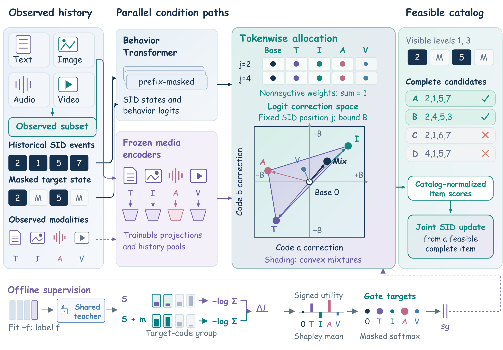
Figure 1 的左半部分把输入分成观测到的 SID 事件、当前目标掩码状态和已观测媒体。中央行为分支从 SID 输出逐位置状态与基座分数，媒体分支按来源得到历史摘要，在两个未决位置分别产生分配。中央平面上的坐标代表同一位置两个候选码的 logit 修正量，基座在原点，每个模态修正是平面内一点，单纯形权重使混合修正停在这些点张成的区域里。若可用媒体都投向误导方向，原点仍可作为退路。右侧先依据位置一和三的可见值筛掉第三位不符的商品 C 和第一位不符的商品 D，剩下完整元组 A 与 B，再看引导分数如何重排。下层的共享教师成对切换某个模态，对同一组商品的概率归一化后，只合计与真项共享目标码的编号。所得损失差不直接写进候选分数，而是通过多个联盟的平均值变成停梯度的门控目标。图中的媒体流因此有两条作用路线：部署时生产待加到行为 logits 上的修正，训练时还作为可切换的对照条件。对比单纯扩大视觉特征维度，这个结构可以观察某个位置受哪一类历史条件影响，且有确定的修正幅度。但是原点和残差上限无法保证所有低间距候选保持原排序，这需要结合目录分差和解码承诺路径判断。图上用两个纠正坐标表达高维词表的一处切面，蓝色混合点并非另一个新模态，箭头也没有表示一次梯度更新。只要某条流被可用掩码剔除，混合可到达的区域就去掉了由该流张成的方向。实际读取日志时可以联查可用标记、位置权重与各码残差，仅靠其中任一字段都无法重建右侧商品能量。
行为主干由可训练的 Pre-LN Transformer 构成。历史 SID 扁平为 $n_uL$ 个 token，按级别、事件位置、片段和时距嵌入。目标 $L$ 个 token 还带噪声时刻嵌入。对应的注意力偏置见公式（5）。
符号解释：$A$ 是加到注意力分数的屏蔽矩阵，$N_H$ 是历史 token 数，$L$ 是目标 SID 长度，$n_u$ 表示历史事件数。行是查询、列是键，填零的块表示允许关注，负无穷块切断历史对目标的访问，padding 键另加屏蔽。历史内部可以双向编码且不依赖任何目标码，目标可以双向看当前部分状态并读历史，给了请求内跨去噪步复用历史键值的机会。
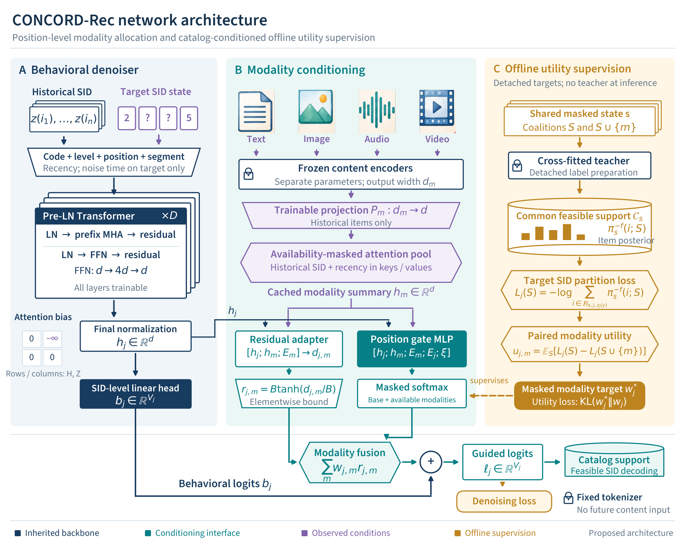
Figure 2 左侧把行为通路拆为历史与目标嵌入、分块注意力、前馈和逐级 SID 词表头。历史的键值保持可复用，目标侧每次填入新码后还要更新隐状态。中间四路编码器的输出宽度可不同，共用解码宽度的是经过各自投影后的历史表示。位置状态进入两个不同分支，残差适配器决定向某个备选码推多远，门控网络决定某个模态占多少混合质量。绿色方框下方的加法把内容方向和基座预测相接，所以相同的门控比例放在不同适配器参数下，并不意味着对所有候选有一样的效应。右栏教师读相同掩码状态，通过候选级归一化和分区损失计算效用，再由虚线监督中间门控，边界处没有让学生梯度流回教师。它与冻结多媒体特征提取器也是两种作用完全不同的组件。图还区分两类学习信号，逐码去噪从引导 logits 学恢复真实码，同时门控 KL 学习分配槽位。线上可以缓存与目标状态无关的历史表示和媒体表示，仍要按当前位置把它们与解码隐状态相接。这个区分决定了部署可缓存的是历史侧输入，不能把训练时依赖正例分区的效用值当成请求侧特征预计算。模块 A 中按层共享历史与目标码表，表示相同码在两个片段中可复用嵌入，再由片段和位置嵌入分别表达角色。模块 B 的门控和适配器需要当前目标位置状态，即使媒体向量完全不变，首次从全掩码出发和晚一点只剩一个位置时仍可以产生不同修正。模块 C 的对照始终锁定同一部分目标，保证这两种状态之间的差异没有被误写成某个媒体的训练效用。
2.3 交叉拟合的目录分区效用与学生目标
以用户为单位把训练集切成 $F$ 折，教师 $T^{-f}$ 只用除 $f$ 折外的数据拟合。对被留出的历史，给教师同一个部分码和相同可行支持集，只切换模态联盟。教师可以与学生参数量相匹配，其任务是为折外候选标标签。原文公式（6）和（7）把现场每个掩码位置的码概率沿完整候选归并。
符号解释：$s$ 是固定历史、部分码 $\tilde z$ 和噪声时刻的组合，$i$ 是候选商品，$\mathcal M(\tilde z)$ 是未决位置，$z_k(i)$ 是其第 $k$ 级码，$S$ 是可用模态的一个子集，$p_{T^{-f},k}$ 是留折外教师输出的逐码概率，$\rho_s$ 表示两联盟共享的固定先验，主实验为零，$\mathcal C_s$ 是按可见码过滤的同一目录。$E_s^{-f}$ 是未归一化商品能量，$\pi_s^{-f}$ 是这批商品内的概率。组合无效的码不会进入求和，已确定位置也不会在这一步再乘一次概率。目标越接近完全确定，目录可能越小，能分出的不同目标码分区越少。
符号解释：$\mathcal B_{s,j,c}$ 是第 $j$ 位取码值 $c$ 的完整商品集合，$y_u$ 是训练真项，$L_j^{-f}$ 为其所在目标码分区的负对数后验质量，$u_{j,m}$ 表示加入模态 $m$ 后损失下降的平均量，$\pi_m$ 是在其他可用模态中抽联盟的分布。主实验每种模态抽四个联盟，先均匀抽子集大小、再从同样大小的子集中均匀抽取，对应 Shapley 的加权方式。四模态精确诊断缓存十六种联盟。只剩一个可行码的位损失恒零，不给门控效用标签。
论文的四商品例子展示了为什么不直接用裸 token 交叉熵。四个候选共享首码 7，A 和 B 的第二位都为 2。两组教师对第二位的两个码各给 0.5，加入图像后第三位对三个不同码的分布由 0.2、0.1、0.7 改成 0.4、0.5、0.1。前一组 A 和 B 的联合未归一化能量权重和为 0.15，全目录为 0.60；后一组则分别为 0.45 和 0.70。目标分区质量由四分之一变为十四分之九，而第二位本身的 token 交叉熵完全不变。单联盟效用为 $\log(18/7)$，约 0.9445 nats，差异全部来自第三位改变了目录内部的竞争。这是指定概率的代数例子，并未测量照片对真实商品的收益。
符号解释：$w^*_{j,m}$ 是效用经过温度 $\tau_u$ 归一化的停梯度监督，零号位可用且效用为零；$\mathcal L_{\mathrm{denoise}}$ 是未决码交叉熵，$\mathcal L_{\mathrm{utility}}$ 是信息性位置上的 $\operatorname{KL}(w_j^*\|w_j)$，$\mathcal L_{\mathrm{cons}}$ 约束目录内商品分布，$\lambda_u,\lambda_c,\lambda_2$ 控制各损失，$\theta$ 是模型参数。$x$ 和 $\tilde x$ 分别为干预前后观测，$P_\theta^x$ 与 $P_\theta^{\tilde x}$ 是同一候选集合上的概率，$\operatorname{sg}$ 对清洁分支停梯度，$\operatorname{JS}$ 为 Jensen–Shannon 散度。只有该模态在每个当前掩码位置的清洁效用均非正，选择器 $\chi$ 才开启一致性，避免给真实有帮助的历史信号灌入无条件不变的训练目标。推理期间保留学生预测和目录索引，不调用教师或训练损失。
2.4 目录约束解码与固定支持稳定性
符号解释：$\mathcal I_\tau$ 是预测时刻有资格的目录，$\mathcal C(\tilde z)$ 是满足所有已知位置的商品集合，$S(i\mid\tilde z)$ 是完整候选的排序能量，$\ell_j$ 是引导 logits，$s_{\mathrm{fixed}}$ 保存已提交位置在实际提交步的分数。系统为每个位置和码维护倒排表，按已知的若干位置取交集。当前步从同一个可行完整商品复制本轮高置信位置，避免独立选出的多个位置无法联合补全；相同完成商品出现多条路径时保留最大路径能量。训练由真实商品反向造部分状态，部署则由先前选择形成状态，一个早期错误的合法承诺仍可能永久丢掉真项。
符号解释：$w,w'$ 是两组模态权重，$\epsilon_j$ 是同位置的分配差，$B$ 是已限定的坐标修正幅度，$D$ 是每个商品能量的最大扰动，$S_{(K)}$ 与 $S_{(K+1)}$ 是基准排序在截断边界的两项分数。对数 softmax 的单坐标变化至多为 logit 无穷范数扰动的两倍，因为单坐标和 log-sum-exp 都可能变化。候选之间可能各反向变化 $D$，因此超过 $2D$ 才足够保护同一 top-$K$ 集合。该推导固定残差、部分状态、目录和已累计路径分数，无法覆盖修改内容还一并改变残差或跨步承诺造成的支持集跳变。这里提供的是边界保护的充分条件；没有越过门槛时，个别实际请求依然可以保持排序不变。
3. 实验结果
3.1 三条数据协议与可比边界
主实验把结果分成三个轨道。第一条使用 MicroLens-50K 和 MicroLens-100K 的原始视听历史，可同时考虑标题、封面、音频和视频。论文要求先记录发布版本、媒体可用情况和合格用户，不能把有封面等同于有全部音视频。主切分协议按用户时间排序，最后一次合格行为作测试，前一次作验证，先前作训练，另有全局时间切分协议检查未来商品和分布漂移。第二条按 DiffMM 发布的 TikTok、Baby、Sports，以及 JBM-Diff 独立的 Baby、Sports、Clothing 协议评估。源任务可能是多正例的用户—商品排序，即使能从时间戳还原另一份序列，也会变成新的数据协议。第三条涉及 ANR-DiffRec 和 EPIC 数据协议及 MovieLens、Steam 等扩展。比较按各源数据版本、过滤、时间定义、候选规则和截断位置保留，不能按语义相近的数据集名拼表。
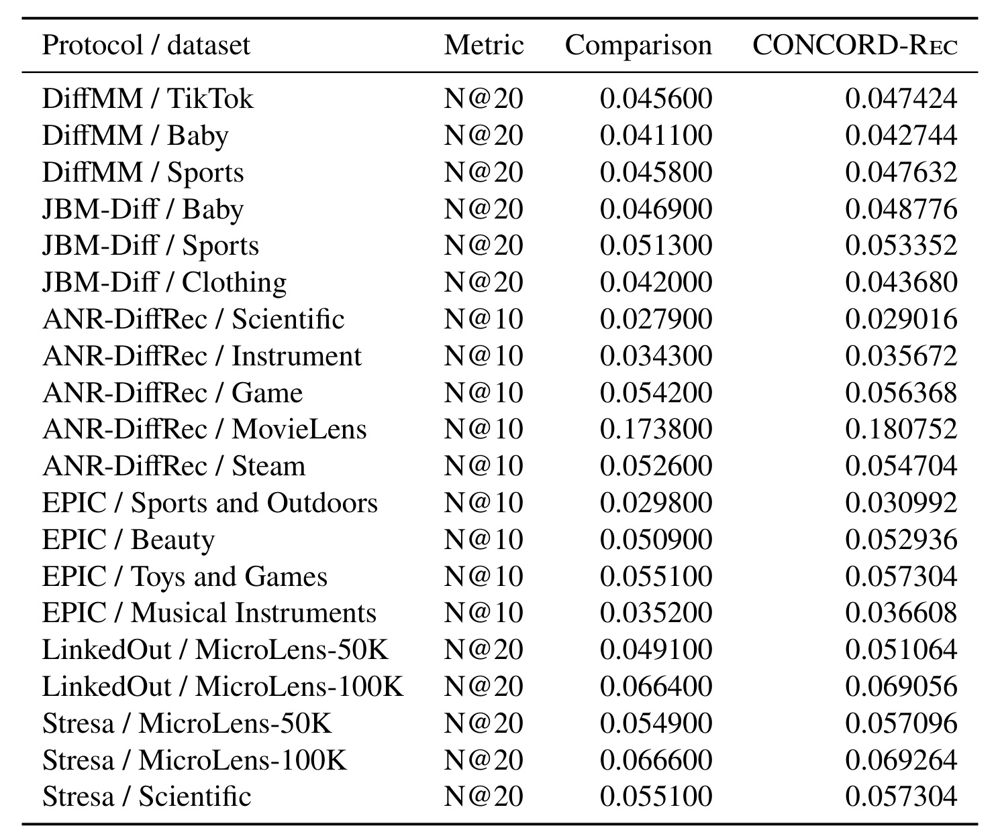
Table 11 每行用同一源协议和指标比较新工作簿的参照及方法均值。TikTok 的 NDCG@20 从 0.045600 到 0.047424，MovieLens 的 NDCG@10 从 0.173800 到 0.180752，虽然绝对增量相差近四倍，两者都正好等于各自参照的百分之四。LinkedOut 和 Stresa 各有一行叫 MicroLens-100K，参照分别为 0.066400 和 0.066600，采用的发布者和处理规则不同，因此保留为两行。Amazon 的 Baby 与 Sports 也在不同研究的原始切分下重复出现。不能把二十行视作二十个独立实验或拿两种 cutoff 直接算宏平均。论文说新结果是作者确认的测量，并说明先前归档包含按排序模板构造的规划值，当前表格以更新工作簿为准；逐查询样本清单、实际查询分母和原始成对输出不足以让读者独立重建。整齐的逐行增幅应按作者表记录，工程上更适合优先复核共享编码、固定候选且坏条件可控的 MicroLens 主实验。三个部署相关问题还要另测：缺失条件来自真实媒体缺口还是随机删除，商品更新是否保留标识兼容，以及第一步大目录状态如何满足预算。
附录又列七个新增域各自的 NDCG@20，例如 KuaiRand-27K 从 0.060000 到 0.062400，MicroLens-1M 从 0.062000 到 0.064480。均为离线作者表。在同候选策略的纯行为输入轨道，MicroLens-100K 的 NDCG@20 从行为参照 0.0586080 到该模型 0.0597802，Recall@20 从 0.1190882 到 0.1214700；六项 Recall 和 NDCG 均报相对 +2%。方法的零可用位保证的是同一个学生将内容修正归零之后精确得到自己的行为分支，纯行为轨道表中的参照是另一个比较模型；两者分数不用相等。这条轨道也不能当作使用图、音频或视频所带来的收益。结果工作簿所述 4,110 条记录混合主结果、消融、鲁棒性、诊断、效率与预处理成本；相同配置的多个指标重复出现，记录条数不是独立训练次数或线上请求数。
3.2 匹配干预下的主结果
共同编码器实验把行为模型、输入媒体和候选约束尽量对齐，用统一融合对照条件门控。受控扰动把同一评价历史的媒体删除、降采样或替换为语义不同的内容，两个模型共享干预抽样。完全模态子集可支持成对干预，历史本来就缺失的用户与它们有不同统计分布。干预条件下 NDCG 按排序位置给命中打折，并按理想排序归一化，结果的绝对值受目标分母和候选协议控制。
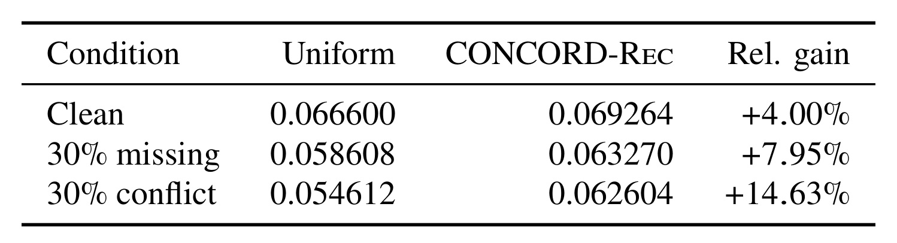
Table 1 的三个控制参照均为统一融合，但每行都是本行对应的观测条件。干净 NDCG@20 从 0.066600 到 0.069264，差 0.002664；百分之三十缺失时从 0.058608 到 0.063270，差 0.004662；百分之三十冲突时从 0.054612 到 0.062604，差 0.007992。相对提升分别为百分之四、七点九五和十四点六三，分母分别是三行的控制值。另一种读法是按方案自身干净值作分母，冲突时保留约百分之九十点三八；这是相对降级的保留比例，不是与控制相比的增益。三个成对差区间来自五对训练结果的汇总差标准差，干净为 [0.001010, 0.004318]，缺失为 [0.003207, 0.006117]，冲突为 [0.006636, 0.009348]。对应事后三比较的 Holm 校正概率为 0.0111、0.0018 和 0.0002。三类条件下差值均为正，冲突这一行的绝对差也最大，但方法干净结果和冲突结果仍差 0.006660。上线关注的是在共同历史、共同目录、相同噪声强度下是否止损，以及不同用户可用模态比例是否改变这个差值。统计区间应当从成对差自身的样本标准差计算，不能分别拿两个模型的方差自行拼接。表里五对训练只提供以种子为单位的汇总，不足以推断每个用户贡献分布、长尾商品单独的效果或同一用户在不同扰动条件下的跨行相关。也不存在把干净、缺失、冲突三个相对值简单求均值就代表实际线上收益的依据，实际要用可审计的用户和场景权重。
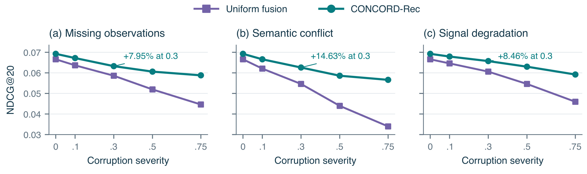
Figure 3 的横轴用从零到约四分之三的试验强度组织面板，纵轴均是 MicroLens-100K 的 NDCG@20。左图删除证据，中图保留媒体存在位但让其语义与历史项目不匹配，右图让信号细节变差。不同面板的相同强度数值只表示各自干预族定义下的程度，不能理解成等严重的实际错误数。每个点是同样分组抽样下五对训练均值，线段连的是采样格点，无逐方法标准差带。基于图上的零点，两种方法都随扰动增强而下降，统一融合在冲突面板下降更快。强度 0.3 处报告相对优势为百分之七点九五、十四点六三和八点四六，其中右图的值应作为该信号退化协议的均值记录。差距扩大只说明在测试的错配构造里门控更有机会压低误导证据。日常内容中弱关联标题、拼接音频、跨域画面与标签、时钟漂移可以同时出现，现有单族扫描不能推断这样的联合分布上曲线仍按相同斜率下降。要对齐真实数据，首先要把有无媒体、坏质量和语义错配的错误分开标记，保留来自同一用户历史和目录的配对对照。
3.3 从机制替换分离效用监督
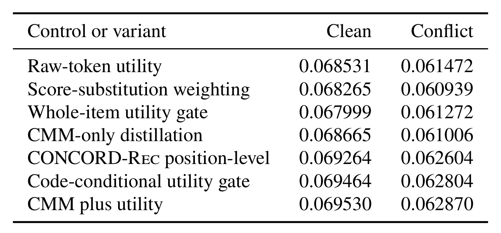
Table 2 把冲突固定在百分之三十，共用位置级行为主干并替换效用或分配接口。按裸 token 损失做效用，冲突分数为 0.061472；按内容替换造成的分数变化分配为 0.060939；共享整项权重为 0.061272；只用目录边缘分布蒸馏为 0.061006。位置级效用 0.062604 高于这些行，作者相对增幅分别约百分之一点八四、二点七三、二点一七、二点六二。差异不能概括为更细分配一定更好。允许同一位置对不同备选码细分权重得到 0.062804，把边缘分布蒸馏和效用一起用得到 0.062870，二者干净分数也微增。这说明监督训练分配和监督训练码预测可以共存，而且位置级只是有较简单边界的参考设计。进一步把每个候选码都给独立配比时，读出宽度、门控开销及内容界对不同候选的解释需要重做。该表给的是点估计，不能单靠第四到第六位小数判断上线排序获益，更不能把所有替换项都写成差异已显著。尤其是裸 token 与目录分区的对照，需要文件级索引记录每个掩码状态在两种标签下都使用同一个商品资格版本；否则换分母造成的误差也会计入这一差值。作者保持教师查询预算相同，使这一替换比把完整模型直接对照统一融合更有解释力。
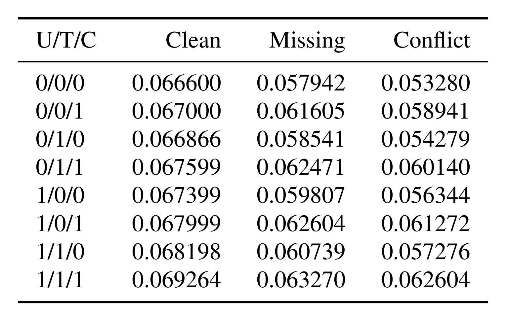
Table 3 的三个二值开关分别是目录效用监督 U、按未决位置分配 T、干预训练课程 C。全开时最右一列冲突为 0.062604，在表中同一参考下只关 U、T、C 分别变为 0.060140、0.061272、0.057276。人工干预训练在全模型附近影响最大，绝对差 0.005328；这解释了若仅拿完整模型和没有干预训练的融合基线对比，就很难把改善完全算给效用。移除效用差 0.002464，和换成整项门控的 0.001332 是在其他组件保持的条件差，不能把三者直接相加用于重构从全关到全开的变化。八格显示当不存在组件或同时关闭多个组件时，另一个开关的增量也会变。全关在缺失及冲突列为 0.057942 和 0.053280，与主结果 Table 1 控制的 0.058608 和 0.054612 不相同，正文没有把两组实验行合并。课程收益目前与人为构造的观测扰动相连，按用户侧噪声成因做切片，才能判断此训练分布是否吻合自然流量。比如全关到只开课程在冲突列增加 0.005661，较全配置附近开关课程的 0.005328 不同；两者都是条件差，课程对干净列的变化则更小。原文八格独立训练使这些点值可计算，却没有让不同格的训练误差自动抵消，解释互作用仍应查看成对差而非四舍五入后比较。
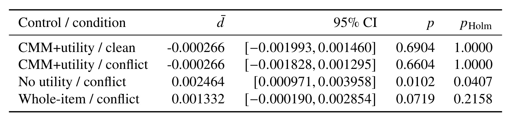
Table 15 将方法减去控制所得的绝对分差、未校正置信区间、原始概率和同家族 Holm 校正后概率并列。原计划前两项应使用验证集选出的最强匹配控制，但当前汇总没有其身份，作者用观察到的最强 CMM 加效用行重建干净及冲突两种比较。两个点差都是负 0.000266，区间跨零，不能认定两种实现有已分辨的差异。无效用控制只在冲突下比较，差 0.002464，95% 区间 [0.000971, 0.003958]，校正后概率 0.0407，是这四项唯一过线的对比。与整项门控的差为 0.001332，区间 [-0.000190, 0.002854]，校正后概率 0.2158。主张应约束为匹配架构及课程下，目录分区效用在作者的冲突协议中有独立证据；不同门控粒度是否胜出，仍需更精确测量。Table 16 另列探索性的未校正概率，裸 token 效用对照和位置分配的差也跨零，不能拿其中某个原始概率替换四对比的校正结论。图表中前两行的校正后概率均为一，对模型谁好谁差没有方向性支持；如果恢复了验证集选择日志，再用预先指定的对照重算四项，才能确认该重建与原分析计划的差别。
成对分析以同一组种子的方案差为单位，计算差均值 $\bar d$ 与差的样本标准差 $s_d$。五对训练、四个自由度时，原文 95% 区间是 $\bar d\pm2.776445\,s_d/\sqrt 5$。这些区间没有多重校正，各家族按各自范围校正的是检验概率。没有种子级用户输出就无法再做论文提到的层级 bootstrap，也不能用每种方法的边际波动替代差值波动。保持一一配对的干预抽样十分关键，哪怕训练种子相同，如果坏媒体供体随机化不同，曲线的比较方差也会被混入观测差异。
3.4 同步数成本与固定参考线
测量覆盖一次、两次、四次、八次和十六次去噪调用。一次调用可以提交多个码，调用次数和目标元组长度是不同的变量。评估至少有两个控制问题：给同样的调用次数，机制增加多少计算并得到多少质量；允许改变调用次数，能否在固定的质量阈值上压低总耗时。论文各用一张图表达。
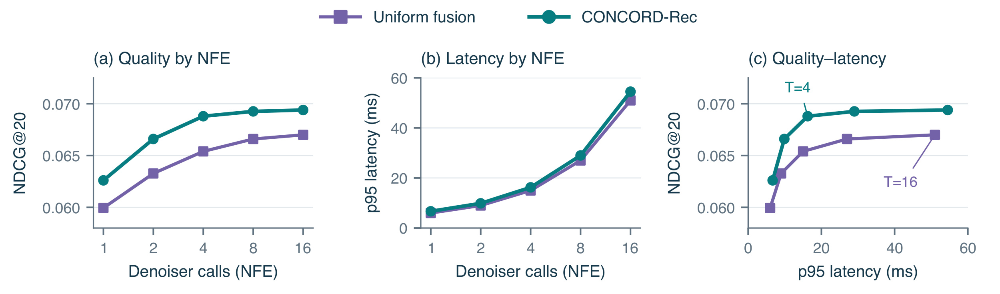
Figure 4 左图以去噪器调用次数作横轴，读出对应 NDCG@20；中图保留相同横轴，改看 p95 耗时；右图把两个观测量配成实际质量与耗时坐标。单位为毫秒的坐标向右意味着更差的尾部响应，质量往上意味着更优排序。四次调用时两套方法分别为 0.068798 和 0.065401，耗时 16.25 与 15.00 毫秒。同次数下多出 1.25 毫秒，相对控制耗时增加百分之八点三三。若调用预算锁定，门控对照应记为质量改善伴随成本增加。图中方法曲线的中后段趋缓，末段继续增加调用换来的质量幅度小于前段；这提出了可操作的预算选择问题。还应关注相同调用步数时目录搜索和缓存读的负担有没有变化，现有汇总曲线把各模块的贡献放在一起。右图中的 T=4 标注属于方案的实测质量点，T=16 标注属于统一融合的另一实测点，不能把右图两者的间距当作四步门控算子的效率差。原文没有硬件标识和逐查询统计，读者暂时无法把差异分配到模型、目录过滤和前置媒体取数。
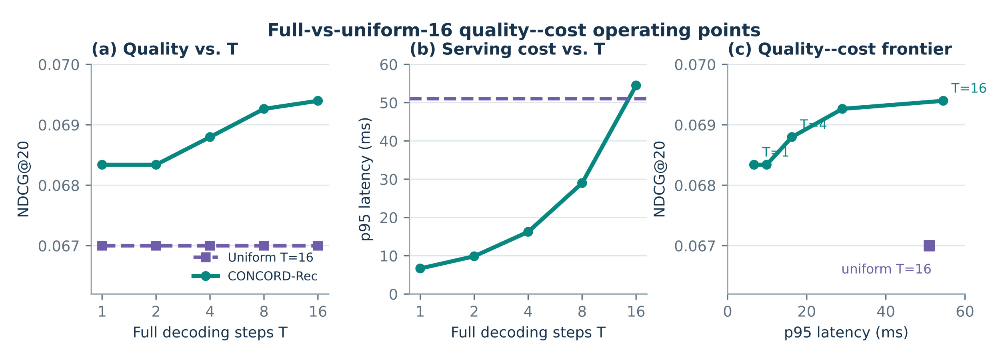
Figure 5 的虚线或方点固定为统一融合十六步，参考 NDCG@20 约 0.067000，p95 为 51.00 毫秒。横坐标上的一至十六只改变完整 CONCORD-Rec 方案的调用预算，因此图左的紫线保持同一高度。工作簿中 T=1 和 T=2 的 NDCG 同为 0.0683396，p95 分别为 6.6875 和 9.875 毫秒；T=4 达到 0.0687978 与 16.25 毫秒。以十六次控制为分母，四次版本的质量相对增加百分之二点六八，尾延时减少百分之六十八点一四。继续拉到十六次时方案质量为 0.0693972，耗时 54.5 毫秒，已越过参考耗时。这解释了收益主要来自改变运行点，不能声称每次去噪都会加速。图四早期蓝绿色点的纵坐标与这张表的 T=1 和 T=2 值从版面读数看不相合，原始逐点清单不可用，本文保持两张图的报告口径，不用表格倒填图四。右图的质量—延时配对适合当作作者所测系统的预算候选，移植前应在共同硬件和候选配置重测。一到两次的质量读数相同而延迟增大，按照表面两指标排序，当前记录下优先考虑一次。四次靠额外开销换来可查询的绝对质量差，不能把十六次方案的最后一个最高点直接用作全部请求的预算。
如果根据四步优势制定上线方案，通常还要收集每步可行目录规模、实际发出的调用数、每步索引与 TopK 耗时、媒体历史特征缓存命中率以及请求并发下的 p95。主文说工作簿登记了吞吐、显存、教师拟合、离线标签准备、内容处理与学生训练成本，但公开稿的相应摘要不能替代完整日志。相同 p95 不保证同样吞吐，把一个定长去噪次数换为动态早退后也要重估尾部及质量，特别是媒体冲突集中在长历史用户的情形。
3.5 目录承诺案例与压力切面
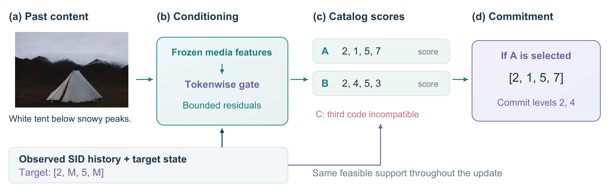
Figure 6 从一个已经观看过的露营条目的图文出发，经过冻结媒体特征、位置门控和有界残差，对当前目标的两种完整商品假设打分。目标部分码为第二、第四位未知，第一和第三位已经定为 2 和 5。候选 A 是 [2, 1, 5, 7]，B 是 [2, 4, 5, 3]，C 因第三位不符被排除。选择 A 时将第二与第四位一起从 A 复制，避免从 A 拿第二位却从 B 拿第四位而拼成一个目录之外的混合标识。图中 A/B 分数没有具体数，照片是实际图材且说明为作者撰写，但代码和承诺是流程示意，不能说该照片实测推荐了 A。结果依赖先前可见值正确保留潜在好候选，若较早那一步把第三位定错，后续合法提交照样可能排除真项。调试时应记录进入每轮的可行商品数、真项是否仍存活、承诺停止的位置及对应分差。这些字段也可以区分检索可行性失败与当前同一目录内的打分失败。图中的可行支持在这一更新内部保持固定，但更新完成后，两条原本都存在的路径只有一条得到本次承诺，部署日志应分开记录更新前候选和更新后仍可延续的候选。
附录有一组固定检查点敏感性扫描，检查更强特征替换或不同残差界下的后验和内容幅度。它使用小型合成目录和固定掩码状态，部分可行集只含三至二十七个商品。这个实验可以确认扰动开始作用于哪些 logits，不能补齐真实目录第一步的候选开销、用户满意度或真实故障率。对于相互冲突的证据，教师的负效用还能来自它本身不擅长该媒体类型。除观察干预均值，还应按用户历史长度、媒体真正缺失比例和候选间距分层，对教师赢不过行为基座的切片重新做标签精度检查。
4. 总结
4.1 对证据的判断
目录分区效用给模态分配提供了一个具体可比较的监督目标。它同时追踪当前有哪些有效商品、某个位置的真实码属于哪组，以及媒体加入时同一组概率如何变化。这比仅看某一位 token 的概率变化保留了完整商品竞争的信息。行为基座和有界残差提供了可控的回退接口，也让模型调试能分别定位媒体缺失、门控估错和候选分间距太小。就已公开实验而言，最值得保留的证据是完全配对的冲突环境里保留模型其他组件而取消效用，NDCG@20 降低 0.002464，且在作者重建的四项比较家族内经校正仍过线。丰富版本给了更高的点估计，应和原方案一起纳入实际成本对照。质量延时取舍则要看 T=4 和统一融合 T=16 的不同运行点，同 T 时成本上升。
4.2 局限与复核顺序
- 识别范围固定。 折外配对效用是固定教师、固定候选集上的训练目标。教师可能继承模态或人群偏差，干预也与自然媒体故障不同。把它当作实际上线增益会忽略候选召回和用户反馈改变。
- 逐步支持可能出错。 证明保护的是同一个掩码状态下的排名。错误承诺让真项落出支持后，其余位置仍能填出合法商品，但结果已经不可能命中真项。必须单独统计轨迹中支持丢失和最终排序失败。
- 汇总表的可追溯性有限。 二十行源兼容结果每行相对增幅相同，工作簿区分了新测量值和旧规划值，原始查询清单及种子级输出仍不能从论文重建。五对训练汇总可重算配对区间，无法估计用户层异质性或确认预定的最强验证对照身份。
- 成本账还缺关键部署条件。 实验给出按调用次数的延时点，未公开硬件代号和逐查询预算。线上目录资格变化、倒排交集、特征准备、教师联盟生成和缓存可能让节省的解码成本重新分布。模型在离线 NDCG 上更好，也没有直接用户体验验证。
复核可先从易检查的代数一致性开始。在小支持集直接枚举所有可行项，对比目录归一化、分区概率和裸 token 监督差异，再随机遮盖任意位置验证倒排交集与枚举一致。随后锁定同一掩码种子、同一候选版本和同一干预供体，做完整模型与无效用模型的配对训练并保留各用户输出。这样可以检查总体提升是否主要来自少量人工冲突强度或高活跃群体。最后联合记录调用次数、目录规模以及每阶段耗时，用同 T 和固定质量门槛两条曲线确认 serving 价值。若样本支持几乎在一步内收敛，可以比较更简单的分配策略；若较多请求在前几步一次错误承诺就失去真项，应测试保留多个可行路径或改变承诺顺序。
把思路移到个性化记忆或 RAG 时，同样可以在固定文档候选和任务状态上，分别移除一组用户历史或证据，评估目标答案支持质量的变化。迁移需要先明确什么是合法候选、正例由何种证据定义、对照是否共用分母，避免把检索候选扩容当成证据权重带来的改善。本文的公式可以提供一个明确的对照模板，部署阈值仍要以新任务的候选和时延实测决定。